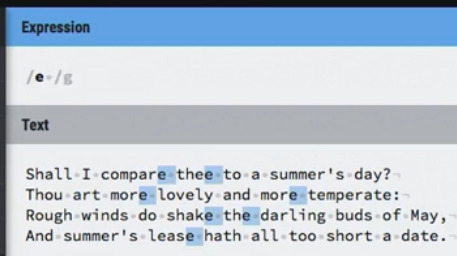
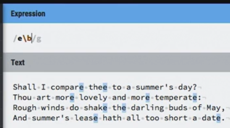
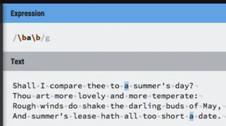
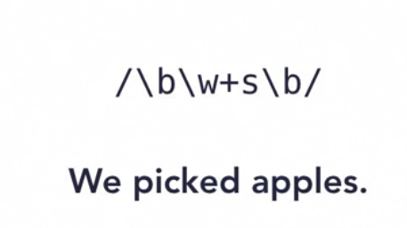

| Metatcharacter | Meaning |
|---|---|
| \b | Word boundary start/end of word |
| \B | Not a word boundary |

/\b\w+\b/
finds four matches in "This is a test"
it would also match "abc_123" but not "top-notch"
because _ underscore is a character but - dash/hypen is NOT
/\bNew\bYork\b/
would not match "New York"
/\bNew\b \bYork\b/
you need to account for the space
/\Bw+\B/
would match ("hi" and "es") in "This is a test"
say we want to find the letter "e" at the end of the word, even with punctuation
doesn't work
now we have all the e's that end the word
the below is how we find all stand alone a's
The below is how we find a word that ends in "s"
